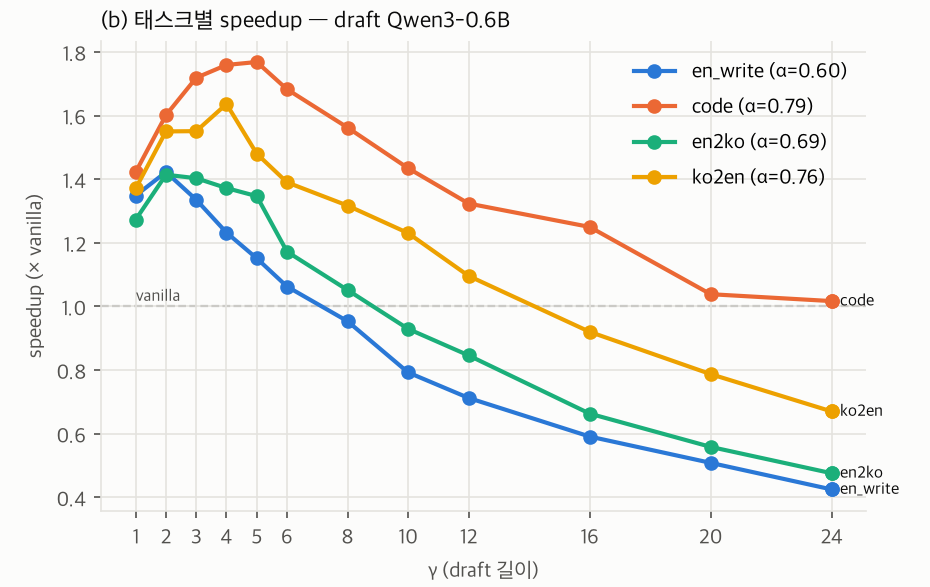
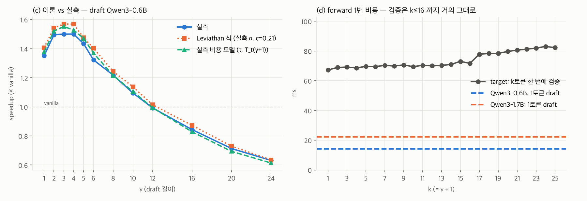

ENC Lab · [온디바이스AI-3팀] 연구 로그
| ID | 가설 (한 줄) | 상태 | 최근 갱신 |
|---|---|---|---|
| H1 | 같은 동양권인 일본어, 중국어에서는 acceptance rate가 크게 떨어지며 그 감소폭은 draft-target 어휘 커버리지로 예측되고 연산 제약이 강해질수록 증폭되는데 한국어에서도 발생할 것이다. (변경 없음) | 설계 중 | W01 |
| H2 | 노트북(M5 Pro)에서 SD 역전 γ는 실측 α·c를 넣은 Leviathan 식 예측과 γ 격자 한 칸 이내로 일치한다. | 검증 중 | W02 |
| 한 줄 요약 | Leviathan speculative decoding을 직접 구현해 노트북(Apple M5 Pro, MPS)에서 Qwen3-8B target + Qwen3-0.6B/1.7B draft로 γ를 1~24까지 sweep했다. γ=4에서 최고 1.50×, γ≈12부터 vanilla보다 느려지고, 이 역전 위치를 실측 α·c를 넣은 Leviathan 식이 맞췄다. 한국어 출력(en→ko)의 α는 영어 번역 출력보다 낮았지만 영어 자유작문보다는 높았다. |
|---|
| 상태 | 설계 중 변화 없음. 이번 주 측정은 커버리지 부분에 닿지 않는다(같은 토크나이저 쌍). | ||||||||||||||||||||
|---|---|---|---|---|---|---|---|---|---|---|---|---|---|---|---|---|---|---|---|---|---|
| 경쟁 설명 |
| ||||||||||||||||||||
| 이번 주 |
Qwen3-8B target, γ=4, 태스크당 프롬프트 3개 × 2회, greedy, 최대 128토큰. 진 조건부터.
en→ko는 ko→en보다 α가 0.05~0.07 낮고 더 일찍 역전된다(γ 10·12 vs 16). 하지만 4개 태스크 중 최저는 아니다. | ||||||||||||||||||||
| Figure |  | ||||||||||||||||||||
| 해석 |
"한국어라서 α가 낮다"는 이 데이터로는 말할 수 없다. 같은 영어 출력끼리도 자유작문과 번역이 0.14~0.16 차이 나서, 언어 차이(0.05~0.07)보다 태스크 차이가 크다. H1을 검증하려면 (1) 같은 내용의 병렬 문장으로 방향만 바꾸고 (2) 어휘가 다른 draft-target 쌍을 써서 커버리지를 변수로 만들어야 한다. 지금 쌍(Qwen3 계열)은 커버리지 100%라 H1의 핵심 변수가 고정돼 있다. | ||||||||||||||||||||
| 미보고 | 커버리지 — 같은 토크나이저라 측정 불가(H1의 핵심 단어). 일본어·중국어 미측정. "연산 제약이 강해질수록 증폭" 미측정. 태스크당 프롬프트 3개라 0.05~0.07 차이가 프롬프트 간 산포보다 큰지 모른다. | ||||||||||||||||||||
| 논문 매핑 | 보류 |
| 상태 | 신규 → 검증 중 | ||||||||||||||||||
|---|---|---|---|---|---|---|---|---|---|---|---|---|---|---|---|---|---|---|---|
| 경쟁 설명 |
| ||||||||||||||||||
| 이번 주 |
12프롬프트(4태스크 × 3) × 2회, γ 1~12 (2회차는 24까지), bf16, batch 1. ±는 프롬프트 간 std(대부분 태스크 차이). 진 조건부터 — 1.7B는 α가 0.1 높은데도 최고 speedup이 0.6B보다 낮다.
target 1토큰 67 ms. 검증(k토큰 한 번에)은 k≤16까지 +9% 이내, k=17에서 +16%로 계단. | ||||||||||||||||||
| Figure |  | ||||||||||||||||||
| 해석 |
역전은 "얻는 토큰 τ는 γ=6 이후 3.0~3.3으로 포화, 비용 γ·c+1은 선형"이 만나는 γ≈12다. 핵심은 c가 가중치 크기 비율(0.09)의 2배라는 점이다. 세 모델 1토큰 비용이 7.8 ms + 가중치 바이트 / 259 GB/s로 맞아떨어지고, 0.6B forward의 55%가 크기와 무관한 고정 오버헤드다. 그래서 이 노트북에선 α를 올리는 것(1.7B)보다 draft 비용을 줄이는 쪽이 이득이 크다. 오버헤드가 없으면(c=0.09) 같은 α에서 최고 ~2.0×, 역전 γ≈24로 예측된다. 하드웨어별 적용 bound를 c 하나로 옮길 수 있다는 뜻이고, 3090에서 이 예측이 맞는지가 다음 검증이다. | ||||||||||||||||||
| 미보고 | c만 바꾼 통제 실험 없음(오버헤드 제거, 다른 HW) — "예측된다"를 다른 c에서 아직 보이지 못했다. greedy 출력이 vanilla와 77%만 같다(bf16 동점 뒤집힘으로 확인했지만 fp32 비교 안 함). temperature>0 속도 미측정. | ||||||||||||||||||
| 논문 매핑 | Leviathan (ICML 2023) 속도 식 재현 / Fig. 후보 — 하드웨어별 역전 γ |
| 미팅 결정사항 | 미팅 중 pod leader가 직접 입력. |
|---|---|
| 선행연구 · 막힌 것 |
|